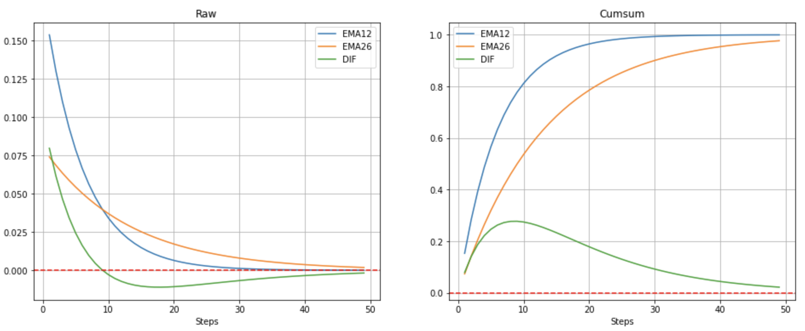

Bull And Bear Index (BBI)
BBI是多空分界线。当股价位于BBI指标线之上，表明股价处于多头行情，当股价位于BBI指标线之下，表明股价处于空头行情。当股价对BBI形成突破时，就是市场多空转换的时候。
当股价向上突破BBI指标时，市场由空头转向多头，为看涨信号。当股价向下跌破BBI指标时，市场由多头转向空头，为看跌信号。
1 | BBI = (MA3 + MA6 + MA12 + MA24) / 4 |
Relative Strength Index (RSI)
\[ {\rm RSI} = 100 - 100/(1+{\rm RS}) \]
\[ {\rm RS} = \frac{\rm RU}{\rm RD} \]
\[ {\rm RSI} = 100\frac{\rm RU}{\rm RU + RD} \]
\[ {\rm RU} = \frac{1}{n} \sum_{i=1}^{n} \max({\rm Ret},0 ) \]
\[ {\rm RD} = -\frac{1}{n}\sum_{i=1}^{n} \min({\rm Ret},0) \]
\[ {\rm RSI} =100\frac{\rm RS}{1+{\rm RS}}=100\frac{\rm RU}{\rm RU + RD} \]
\[ {\rm RSI} = 100\frac{\frac{1}{n} \sum_{i=1}^{n} \max({\rm Ret},0)}{\frac{1}{n} \sum_{i=1}^{n} \max ( {\rm Ret},0 ) -\frac{1}{n}\sum_{i=1}^{n} \min ( {\rm Ret},0)} \]
\[ {\rm RSI} =100\frac{\sum_{i=1}^{n} \max({\rm Ret},0)} {\sum_{i=1}^{n}{\rm \mid Ret \mid}} \]
这就是国内交易软件上面的算法
1 | LC:=REF(CLOSE,1); |
其实核心内容就是，网上广泛流传的方法，都是断章取义，那只是计算第一天RSI的方法。而随后的RSI值，不再按照网上的公式累计每天的涨跌幅。而是通过前一天计算得到的平均涨幅A，和平均跌幅B，分别乘以N-1，得到前N-1天的涨跌幅，而不再依次累加计算。最后再考虑今天是涨还是跌，进行计算。
Welles Wilder JR. \[ {\rm RU}_t = \frac{(n-1) {\rm RU}_{t-1} + {\rm Ret}}{n} \]
\[ {\rm RD}_t = \frac{(n-1) {\rm RD}_{t-1} + {\rm Ret}}{n} \]
\[ {\rm RSI} =100\frac{\rm RU}{\rm RU + RD} \]
EMA
\[ {\rm RSI} = 100 \frac{ {\rm EMA} (\max ({\rm Ret},0)) }{ {\rm EMA} (\max({\rm Ret},0)) - {\rm EMA}(\min({\rm Ret},0))} \]
Culter's RSI
\[ {\rm RSI} = 100 \frac{ {\rm SMA} (\max ({\rm Ret},0)) }{ {\rm SMA} (\max({\rm Ret},0)) - {\rm SMA}(\min({\rm Ret},0))} \]
\[ {\rm RSI} =100\frac{\sum_{i=1}^{n} \max({\rm Ret},0)} {\sum_{i=1}^{n}{\rm \mid Ret \mid}} \]
Bollinger Bands (BOLL)
该工具结合了移动平均和标准差的概念，其基本的型态是由三条轨道线组成的带状通道（中轨和上、下轨各一条）。“中轨”为股价的平均成本，“上轨”和“下轨”可分别视为股价的压力线和支撑线。
1 | 中轨 = N时间段的简单移动平均线 |
一般情况下，设定N=20和K=2。在日线图里，N=20其实就是“月均线”（MA20）。依照正态分布规则，约有95%的数值会分布在距离平均值有正负2个标准差\({\pm 2 \sigma}\)的范围内。
Relative Signed Jump (RSJ)
RV (Realized Variance)
\[ \begin{equation} \begin{aligned} {\rm RV} &= \sum^{n}_{i=1} r^2_i\\ {\rm RV^+} &= \sum^{n}_{i=1} r^2_iI(r>0)\\ {\rm RV^-} &= \sum^{n}_{i=1} r^2_iI(r<0)\\ {\rm RSJ} &= \frac{RV^+ - RV^-}{RV} \end{aligned} \end{equation} \]
1 | //ZERO:0; |
1 | RET:=100 * LN(CLOSE/REF(CLOSE,1)); |
- 其中I(...)就是条件判断函数，当括号内条件成立时函数值为1，不成立时数值为0。
RSJ可以很好地反映上涨下跌的情绪变化，当RSJ大于0时，说明证券的上行波动率大于下行波动率，涨势明显；当RSJ小于0时，说明证券的下行波动率大于上行波动率，跌势显著。
Moving Average Convergence Divergence (MACD)
EMA \[ {\rm EMA}= \begin{cases} {\rm Price}(t), t=0 \\ {\rm Price}(t)\times k + {\rm EMA}(y) \times(1-k), t>0 \end{cases} \]
- t, today
- y, yesterday
- N, number of days in EMA
- k, 2 / (N+1)
Expanding out EMA each time results in the following power series, showing how the weighting factor on each datum p1, p2, etc., decreases exponentially: \[ {\rm EMA} = k[p_1 + (1-k)p_2 + (1-k)^2p3 + (1-k)^3p_4 + \cdots] \]
- \(p_1\), price today
- \(p_2\), price yesterday
MACD
1 | DIF:EMA(CLOSE,12)-EMA(CLOSE,26); |
如下图，DIF与EMA的区别是DIF在时间序列上面存在负权重。

DIF、DEA与MACD的在时间序列权重对比
使用蒙特卡洛仿真生成股票路径分析MACD的表现

微思策略
上涨趋势-绿巨柱
首先，量价指标肯定是有用的，比如我经常提到的“绿巨柱”，是在高位放巨量，成交量呈绿色，基本算是见顶信号。就像乐山电力，最近出现了三个“绿巨柱”，其中有两个就是顶。根据这个指标，我们可以避开很多大坑。
上涨趋势-下跌缩量
其次，当某只股票沿着5日均线上升时，下跌时的缩量，就是一个很好的上车时机，比如闽东电力、恒源煤电等。但要注意的是，缩量下跌的时候，一定不要跌破5日均线，而且量缩得越狠越好。反之，如果当某只股出现了下跌趋势，比如沿着5日均线下跌，这种缩量是没用的，反而放量会更好一些。
下跌趋势-缩量
反之，如果当某只股出现了下跌趋势，比如沿着5日均线下跌，这种缩量是没用的，反而放量会更好一些。同样是看闽东电力，当它的下跌趋势形成后，后面三个缩量下跌都没止跌，最后在两个暴跌后，稍稍放量便迎来了V型反转。这里需要说明的是，下跌底部的量都比较小，很少出现底部放巨量的。而且在底部反转初期，即使是红柱的成交量，也不可能突然放大，都是一个循序渐进的过程。所以，在股价上升的过程中，不要等到放巨量才进场，巨量的后面不是暴涨就是暴跌（暴跌居多），一般人是受不了的。